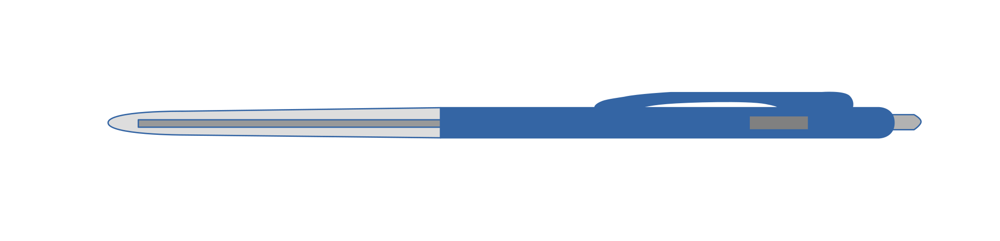

gen_statem Behaviour
View Source
It is recommended to read this section alongside
the gen_statem reference manual in STDLIB.
Event-Driven State Machines
Established Automata Theory does not deal much with how a state transition is triggered, but assumes that the output is a function of the input (and the state) and that they are some kind of values.
For an Event-Driven State Machine, the input is an event that triggers a state transition and the output is actions executed during the state transition. Analogously to the mathematical model of a Finite State Machine, it can be described as a set of relations of the following form:
State(S) x Event(E) -> Actions(A), State(S')These relations are interpreted as follows: if we are in state S,
and event E occurs, we are to perform actions A, and make a transition
to state S'. Notice that S' can be equal to S,
and that A can be empty.
In gen_statem we define a state change as a state transition in which the
new state S' is different from the current state S, where "different" means
Erlang's strict inequality: =/= also known as "does not match". gen_statem
does more things during state changes than during other state transitions.
As A and S' depend only on S and E, the kind of state machine described
here is a Mealy machine (see, for example, the Wikipedia article
Mealy machine).
Similar to most gen_ behaviours, gen_statem keeps a server Data
item besides the state. Because of this data item, and since there is
no restriction on the number of states (assuming sufficient virtual
machine memory), or on the number of distinct input events, a state
machine implemented with this behaviour is Turing complete. But it
feels mostly like an Event-Driven Mealy machine.
Everyday State Machine
An example of an everyday device that can be modelled as a state machine is a classic ballpoint pen, the retractable type where you push the end to expose the tip and push the side to retract it. (A push-push pen would also be an example but that type has only one event, so it is less interesting)

---
title: Ballpoint Pen State Diagram
---
stateDiagram-v2
[*] --> Retracted
Retracted --> Retracted : push-side
Retracted --> Exposed : push-end\n* Expose tip
Exposed --> Retracted : push-side\n* Retract tip
Exposed --> Exposed : push-endThe state diagram shows the states, events, and state transitions with transition actions. Note that pushing the end when the tip is exposed, or pushing the side when the tip is retracted, does not change the state nor cause any actions, which is modeled by an arrow back to the same state.
When to use gen_statem
You should consider using gen_statem over gen_server if your
process logic is convenient to describe as a state machine and you
need any of these gen_statem key features:
- Co-located callback code for each state, for all event types, such as call, cast, and info
- Postponing events - a substitute for selective receive
- Inserted events - events from the state machine to itself; for purely internal events in particular
- State enter calls - callback on state entry co-located with the rest of each state's callback code
- Easy-to-use time-outs - state time-outs, event time-outs, and generic time-outs (named time-outs)
For simple state machines not needing these features, gen_server
is perfectly suitable. It also has a smaller call overhead, but we are
talking about something like 2 vs 3.3 microseconds call roundtrip time
here, so if the server callback does just a little bit more than just
replying, or if calls are not extremely frequent, that difference
will be hard to notice.
Callback Module
The callback module contains functions that implement the state
machine. When an event occurs, the gen_statem behaviour engine calls
a function in the callback module with the event, current state, and
server data. This callback function performs the actions for the
event, and returns the new state and server data as well as actions to
be performed by the behaviour engine.
The behaviour engine holds the state machine state, server data, timer references, a queue of postponed messages, and other metadata. It receives all process messages, handles the system messages, and calls the callback module with state machine specific events.
The callback module can be changed for a running server using any of the
transition actions
{change_callback_module, NewModule},
{push_callback_module, NewModule}, or
pop_callback_module.
Note
Switching the callback module is a pretty esoteric thing to do...
The origin for this feature is a protocol that after version negotiation branches off into quite different state machines depending on the protocol version. There might be other use cases. Beware that the new callback module completely replaces the previous callback module, so all relevant callback functions have to handle the state and data from the previous callback module.
Callback Modes
The gen_statem behaviour supports two callback modes:
state_functions- Events are handled by one callback function per state.handle_event_function- Events are handled by one single callback function.
The callback mode is a property of the callback module and is set at server start. It may be changed due to a code upgrade/downgrade, or when changing the callback module.
See the section State Callback that describes the event handling callback function(s).
The callback mode is selected by implementing a mandatory callback function
Module:callback_mode() that returns one of
the callback modes.
The Module:callback_mode() function
may also return a list containing the callback mode and the atom
state_enter in which case state enter calls
are activated for the callback mode.
Choosing the Callback Mode
The short version: choose state_functions - it is the one most like
gen_fsm. But if you do not want the restriction that the state must be an
atom, or if you do not want to write one state callback function per state,
please read on...
The two callback modes give different possibilities and restrictions, with one common goal: to handle all possible combinations of events and states.
This can be done, for example, by focusing on one state at the time and for every state ensure that all events are handled. Alternatively, you can focus on one event at the time and ensure that it is handled in every state. You can also use a mix of these strategies.
With state_functions, you are restricted to use atom-only states, and the
gen_statem engine branches depending on state name for you.
This encourages the callback module to co-locate the implementation
of all event actions particular to one state in the same place in the code,
hence to focus on one state at the time.
This mode fits well when you have a regular state diagram, like the ones in this chapter, which describes all events and actions belonging to a state visually around that state, and each state has its unique name.
With handle_event_function, you are free to mix strategies, as all events
and states are handled in the same callback function.
This mode works equally well when you want to focus on one event
at the time or on one state at the time, but function
Module:handle_event/4 quickly grows
too large to handle without branching to helper functions.
The mode enables the use of non-atom states, for example, complex states,
or even hierarchical states. See section Complex State.
If, for example, a state diagram is largely alike for the client side
and the server side of a protocol, you can have a state {StateName, server},
or {StateName, client}, and make StateName determine where in the code
to handle most events in the state. The second element of the tuple
is then used to select whether to handle special client-side
or server-side events.
State Callback
The state callback is the callback function that handles an event in the current state, and which function that is depends on the callback mode:
state_functions- The event is handled by:Module:StateName(EventType, EventContent, Data)This form is the one mostly used in the Example section.
handle_event_function- The event is handled by:Module:handle_event(EventType, EventContent, State, Data)See section One State Callback for an example.
The state is either the name of the state callback itself, or an argument
to the handle_event() callback. The
other arguments are the EventType and the event dependent EventContent,
both described in section
Event Types and Event Content,
and the the last argument is the current server Data.
State Enter Calls (see that section) are also handled by the event handler and have slightly different arguments.
The state callback return values are defined in the description of
Module:StateName/3 in gen_statem.
Here is a maybe more readable list:
{next_state, NextState, NewData [, Actions]}Set next state and update the server data. If theActionsfield is used, execute Transition Actions (see that section). An emptyActionslist is equivalent to not returning the field.If
NextState =/= Stateit's a state change andgen_statemdoes some extra things: the event queue is restarted from the oldest postponed event, any current state time-out is canceled, and a state enter call is performed, if enabled. The currentStatebecomesOldStatein a state enter call.{keep_state, NewData [, Actions]}Same as thenext_statevalues withNextState =:= State, that is, no state change.keep_state_and_data | {keep_state_and_data, Actions}Same as thekeep_statevalues withNextData =:= Data, that is, no change in server data.{repeat_state, NewData [, Actions]} | repeat_state_and_data |{repeat_state_and_data, Actions}Same as thekeep_stateorkeep_state_and_datavalues, but if state enter calls are enabled; repeat it as if this state was entered again. In this caseStateandOldStatebecomes equal in the repeated state enter call since the state is re-entered from itself.{stop, Reason [, NewData]}Stop the server with reasonReason. If theNewDatafield is used, first update the server data.{stop_and_reply, Reason, [NewData, ] ReplyActions}Same as thestopvalues, but first execute the given transition actions that may only be reply actions.
The First State
To decide the first state the
Module:init(Args) callback function is called
before any state callback is called. This function
behaves like a state callback function, but gets its only argument Args
from the gen_statem start/3,4 or
start_link/3,4 function, and returns
{ok, State, Data} or {ok, State, Data, Actions}. If you use the
postpone action from this function, that action
is ignored, since there is no event to postpone.
Transition Actions
In the first section
(Event-Driven State Machines), actions
were mentioned as a part of the general state machine model. These general
actions are implemented with the code that callback module gen_statem
executes in an event-handling callback function before returning to the
gen_statem engine.
There are more specific transition actions that a callback function can
command the gen_statem engine to do after the callback function return.
These are commanded by returning a list of actions
in the return value from the
callback function. These are the possible
transition actions:
{postpone, Boolean}- Iftruepostpone the current event, see section Postponing Events.{hibernate, Boolean- Iftruehibernate thegen_statem, treated in section Hibernation.{state_timeout, Time, EventContent [, Opts]}|{state_timeout, update, EventContent}|{state_timeout, cancel}- Start, update, or cancel a state time-out, read more in sections Time-Outs and State Time-Outs.{{timeout, Name}, Time, EventContent [, Opts]}|{{timeout, Name}, update, EventContent}|{{timeout, Name}, cancel}- Start, update, or cancel a generic time-out, read more in sections Time-Outs and Generic Time-Outs.{timeout, Time, EventContent [, Opts]}- Start an event time-out, see more in sections Time-Outs and Event Time-Outs.{reply, From, Reply}- Reply to a caller, mentioned at the end of section All State Events.{next_event, EventType, EventContent}- Generate the next event to handle, see section Inserted Events.{change_callback_module, NewModule}- Change the callback module for the running server. This can be done during any state transition, whether it is a state change or not, but it cannot be done from a state enter call.{push_callback_module, NewModule}- Push the current callback module to the top of an internal stack of callback modules and set the new callback module for the running server. Otherwise like{change_callback_module, NewModule}above.pop_callback_module- Pop the top module from the internal stack of callback modules and set it to be the new callback module for the running server. If the stack is empty the server fails. Otherwise like{change_callback_module, NewModule}above.
For details, see module gen_statem for type
action(). You can, for example, reply to many
callers, generate multiple next events, and set a time-out to use absolute
instead of relative time (using the Opts field).
Out of these transition actions, the only immediate action is
reply for replying to a caller. The other actions are collected and
handled later during the state transition.
Inserted events are stored and inserted all
together, and the rest set transition options where the last of a
specific type override the previous. See the description of a state
transition in module gen_statem for type
transition_option().
The different Time-Outs and
next_event actions generate new events with
corresponding
event types and event content.
Event Types and Event Content
Events are categorized in different
event types. Events of all types are for a
given state handled in the same callback function, and that function gets
EventType and EventContent as arguments. The meaning of the EventContent
depends on the EventType.
The following is a complete list of event types and from where they come:
cast- Generated bygen_statem:cast(ServerRef, Msg)whereMsgbecomes theEventContent.{call, From}- Generated bygen_statem:call(ServerRef, Request),gen_statem:send_request(ServerRef, Request), orgen_statem:send_request(ServerRef, Request, _, _)whereRequestbecomes theEventContent.Fromis the reply address to use when replying either through the transition action{reply, From, Reply}, or by callinggen_statem:reply(From, Reply)from the callback module.info- Generated by any regular process message sent to thegen_statemprocess. The process message becomes theEventContent.state_timeout- Generated by transition action{state_timeout, Time, EventContent}when the time-out expires. Read more in sections Time-Outs and State Time-Outs.{timeout, Name}- Generated by transition action{{timeout, Name},Time, EventContent}when the time-out expires. Read more in sections Time-Outs and Generic Time-Outs.timeout- Generated by transition action{timeout, Time, EventContent}(or its short formTime) when the time-out expires. Read more in sections Time-Outs and Event Time-Outs.internal- Generated by transition action{next_event, internal, EventContent}. All event types above can also be generated using thenext_eventaction:{next_event, EventType, EventContent}.
State Enter Calls
The gen_statem behaviour can, if this is enabled, regardless of callback
mode, automatically call the state callback
with special arguments whenever the state changes, so you can write
state enter actions near the rest of the state transition rules.
It typically looks like this:
StateName(enter, OldState, Data) ->
... code for state enter actions here ...
{keep_state, NewData};
StateName(EventType, EventContent, Data) ->
... code for actions here ...
{next_state, NewStateName, NewData}.Since the state enter call is not an event there are restrictions on the allowed return value and state transition actions. You must not change the state, postpone this non-event, insert any events, or change the callback module.
The first state that is entered after gen_statem:init/1 will get
a state enter call with OldState equal to the current state.
You may repeat the state enter call using the {repeat_state,...} return
value from the state callback. In this case
OldState will also be equal to the current state.
Depending on how your state machine is specified, this can be a very useful feature, but it forces you to handle the state enter calls in all states. See also the State Enter Actions section.
Time-Outs
Time-outs in gen_statem are started from a
transition action during a state transition
that is when exiting from the state callback.
There are 3 types of time-outs in gen_statem:
state_timeout- There is one state time-out that is automatically canceled by a state change.{timeout, Name}- There are any number of generic time-outs differing by theirName. They have no automatic canceling.timeout- There is one event time-out that is automatically canceled by any event. Note that postponed and inserted events cancel this time-out just as external events do.
When a time-out is started, any running time-out of the same type
(state_timeout, {timeout, Name}, or timeout) is canceled, that is,
the time-out is restarted with the new time and event content.
All time-outs have an EventContent that is part of the
transition action that starts the time-out.
Different EventContents does not create different time-outs. The
EventContent is delivered to the state callback
when the time-out expires.
Canceling a Time-Out
Starting a time-out with the infinity time value would never time out,
which is optimized by not even starting it, and any running
time-out with the same tag will be canceled. The EventContent will
in this case be ignored, so it makes sense to set it to undefined.
A more explicit way to cancel a time-out is to use a
transition action on the form
{TimeoutType, cancel}.
Updating a Time-Out
While a time-out is running, its EventContent can be updated using a
transition action on the form
{TimeoutType, update, NewEventContent}.
If this feature is used while no such TimeoutType is running, a time-out
event is immediately delivered as when starting a
zero time-out.
Zero Time-Out
If a time-out is started with the time 0 it will actually not be started.
Instead the time-out event will immediately be inserted to be processed after
any events already enqueued, and before any not yet received external events.
Note that some time-outs are automatically canceled so if you for example
combine postponing an event in a state change
with starting an event time-out with time 0 there
will be no time-out event inserted since the event time-out is canceled by
the postponed event that is delivered due to the state change.
Example
A door with a code lock can be seen as a state machine. Initially,
the door is locked. When someone presses a button, a {button, Button}
event is generated. In the state diagram below, "Collect Buttons" means
to store buttons up to as many as in the correct code; append to
a length capped list. If correct, the door is unlocked for 10 seconds.
If incorrect, we wait for a new button to be pressed.
---
title: Code Lock State Diagram
---
stateDiagram-v2
state check_code <<choice>>
[*] --> locked : * do_lock()\n* Clear Buttons
locked --> check_code : {button, Button}\n* Collect Buttons
check_code --> locked : Incorrect code
check_code --> open : Correct code\n* do_unlock()\n* Clear Buttons\n* Set state_timeout 10 s
open --> open : {button, Digit}
open --> locked : state_timeout\n* do_lock()This code lock state machine can be implemented using gen_statem with
the following callback module:
-module(code_lock).
-behaviour(gen_statem).
-define(NAME, code_lock).
-export([start_link/1]).
-export([button/1]).
-export([init/1,callback_mode/0,terminate/3]).
-export([locked/3,open/3]).
start_link(Code) ->
gen_statem:start_link({local,?NAME}, ?MODULE, Code, []).
button(Button) ->
gen_statem:cast(?NAME, {button,Button}).
init(Code) ->
do_lock(),
Data = #{code => Code, length => length(Code), buttons => []},
{ok, locked, Data}.
callback_mode() ->
state_functions.locked(
cast, {button,Button},
#{code := Code, length := Length, buttons := Buttons} = Data) ->
NewButtons =
if
length(Buttons) < Length ->
Buttons;
true ->
tl(Buttons)
end ++ [Button],
if
NewButtons =:= Code -> % Correct
do_unlock(),
{next_state, open, Data#{buttons := []},
[{state_timeout,10_000,lock}]}; % Time in milliseconds
true -> % Incomplete | Incorrect
{next_state, locked, Data#{buttons := NewButtons}}
end.open(state_timeout, lock, Data) ->
do_lock(),
{next_state, locked, Data};
open(cast, {button,_}, Data) ->
{next_state, open, Data}.do_lock() ->
io:format("Lock~n", []).
do_unlock() ->
io:format("Unlock~n", []).
terminate(_Reason, State, _Data) ->
State =/= locked andalso do_lock(),
ok.The code is explained in the next sections.
Starting gen_statem
In the example in the previous section, gen_statem is started by calling
code_lock:start_link(Code):
start_link(Code) ->
gen_statem:start_link({local,?NAME}, ?MODULE, Code, []).start_link/1 calls function gen_statem:start_link/4,
which spawns and links to a new process, a gen_statem.
The first argument,
{local,?NAME}, specifies the name. In this case, thegen_statemis locally registered ascode_lockthrough the macro?NAME.If the name is omitted, the
gen_statemis not registered. Instead its pid must be used. The name can also be specified as{global, Name}, then thegen_statemis registered usingglobal:register_name/2in Kernel.The second argument,
?MODULE, is the name of the callback module, that is, the module where the callback functions are located, which is this module.The interface functions (
start_link/1andbutton/1) are located in the same module as the callback functions (init/1,locked/3, andopen/3). It is normally good programming practice to have the client-side code and the server-side code contained in the same module.The third argument,
Code, is a list of digits, which is the correct unlock code that is passed to callback functioninit/1.The fourth argument,
[], is a list of options. For the available options, seegen_statem:start_link/3.
If name registration succeeds, the new gen_statem process calls callback
function code_lock:init(Code). This function is expected to return
{ok, State, Data}, where State is the initial state of the gen_statem,
in this case locked; assuming that the door is locked to begin with.
Data is the internal server data of the gen_statem. Here the server data
is a map() with key code that stores the correct
button sequence, key length store its length, and key buttons
that stores the collected buttons up to the same length.
init(Code) ->
do_lock(),
Data = #{code => Code, length => length(Code), buttons => []},
{ok, locked, Data}.Function gen_statem:start_link/3,4
is synchronous. It does not return until the gen_statem is initialized
and is ready to receive events.
Function gen_statem:start_link/3,4
must be used if the gen_statem is part of a supervision tree, that is,
started by a supervisor. Function,
gen_statem:start/3,4 can be used to start
a standalone gen_statem, meaning it is not part of a supervision tree.
Function Module:callback_mode/0 selects
the CallbackMode for the callback module,
in this case state_functions.
That is, each state has its own handler function:
callback_mode() ->
state_functions.Handling Events
The function notifying the code lock about a button event is implemented using
gen_statem:cast/2:
button(Button) ->
gen_statem:cast(?NAME, {button,Button}).The first argument is the name of the gen_statem and must agree with
the name used to start it. So, we use the same macro ?NAME as when starting.
{button, Button} is the event content.
The event is sent to the gen_statem. When the event is received, the
gen_statem calls StateName(cast, Event, Data), which is expected
to return a tuple {next_state, NewStateName, NewData}, or
{next_state, NewStateName, NewData, Actions}. StateName is the name
of the current state and NewStateName is the name of the next state.
NewData is a new value for the server data of the gen_statem,
and Actions is a list of actions to be performed by the gen_statem engine.
locked(
cast, {button,Button},
#{code := Code, length := Length, buttons := Buttons} = Data) ->
NewButtons =
if
length(Buttons) < Length ->
Buttons;
true ->
tl(Buttons)
end ++ [Button],
if
NewButtons =:= Code -> % Correct
do_unlock(),
{next_state, open, Data#{buttons := []},
[{state_timeout,10_000,lock}]}; % Time in milliseconds
true -> % Incomplete | Incorrect
{next_state, locked, Data#{buttons := NewButtons}}
end.In state locked, when a button is pressed, it is collected with the
previously pressed buttons up to the length of the correct code, then
compared with the correct code. Depending on the result, the door is
either unlocked and the gen_statem goes to state open, or the door
remains in state locked.
When changing to state open, the collected buttons are reset, the lock
unlocked, and a state time-out for 10 seconds is started.
open(cast, {button,_}, Data) ->
{next_state, open, Data}.In state open, a button event is ignored by staying in the same state.
This can also be done by returning {keep_state, Data}, or in this case
since Data is unchanged, by returning keep_state_and_data.
State Time-Outs
When a correct code has been given, the door is unlocked and the following
tuple is returned from locked/2:
{next_state, open, Data#{buttons := []},
[{state_timeout,10_000,lock}]}; % Time in milliseconds10,000 is a time-out value in milliseconds. After this time (10 seconds),
a time-out occurs. Then, StateName(state_timeout, lock, Data) is called.
The time-out occurs when the door has been in state open for 10 seconds.
After that the door is locked again:
open(state_timeout, lock, Data) ->
do_lock(),
{next_state, locked, Data};The timer for a state time-out is automatically canceled when the state machine does a state change.
You can restart, cancel, or update a state time-out. See section Time-Outs for details.
All State Events
Sometimes events can arrive in any state of the gen_statem. It is convenient
to handle these in a common state handler function that all state functions
call for events not specific to the state.
Consider a code_length/0 function that returns the length
of the correct code. We dispatch all events that are not state-specific
to the common function handle_common/3:
...
-export([button/1,code_length/0]).
...
code_length() ->
gen_statem:call(?NAME, code_length).
...
locked(...) -> ... ;
locked(EventType, EventContent, Data) ->
handle_common(EventType, EventContent, Data).
...
open(...) -> ... ;
open(EventType, EventContent, Data) ->
handle_common(EventType, EventContent, Data).
handle_common({call,From}, code_length, #{code := Code} = Data) ->
{keep_state, Data,
[{reply,From,length(Code)}]}.Another way to do it is through a convenience macro ?HANDLE_COMMON/0:
...
-export([button/1,code_length/0]).
...
code_length() ->
gen_statem:call(?NAME, code_length).
-define(HANDLE_COMMON,
?FUNCTION_NAME(T, C, D) -> handle_common(T, C, D)).
%%
handle_common({call,From}, code_length, #{code := Code} = Data) ->
{keep_state, Data,
[{reply,From,length(Code)}]}.
...
locked(...) -> ... ;
?HANDLE_COMMON.
...
open(...) -> ... ;
?HANDLE_COMMON.This example uses gen_statem:call/2, which waits for a reply from the server.
The reply is sent with a {reply, From, Reply} tuple in an action list in the
{keep_state, ...} tuple that retains the current state. This return form is
convenient when you want to stay in the current state but do not know or care
about what it is.
If the common state callback needs to know the current state a function
handle_common/4 can be used instead:
-define(HANDLE_COMMON,
?FUNCTION_NAME(T, C, D) -> handle_common(T, C, ?FUNCTION_NAME, D)).One State Callback
If callback mode handle_event_function is used,
all events are handled in
Module:handle_event/4 and we can
(but do not have to) use an event-centered approach where we first branch
depending on event and then depending on state:
...
-export([handle_event/4]).
...
callback_mode() ->
handle_event_function.
handle_event(cast, {button,Button}, State, #{code := Code} = Data) ->
case State of
locked ->
#{length := Length, buttons := Buttons} = Data,
NewButtons =
if
length(Buttons) < Length ->
Buttons;
true ->
tl(Buttons)
end ++ [Button],
if
NewButtons =:= Code -> % Correct
do_unlock(),
{next_state, open, Data#{buttons := []},
[{state_timeout,10_000,lock}]}; % Time in milliseconds
true -> % Incomplete | Incorrect
{keep_state, Data#{buttons := NewButtons}}
end;
open ->
keep_state_and_data
end;
handle_event(state_timeout, lock, open, Data) ->
do_lock(),
{next_state, locked, Data};
handle_event(
{call,From}, code_length, _State, #{code := Code} = Data) ->
{keep_state, Data,
[{reply,From,length(Code)}]}.
...Stopping
In a Supervision Tree
If the gen_statem is part of a supervision tree, no stop function is needed.
The gen_statem is automatically terminated by its supervisor. Exactly how
this is done is defined by a shutdown strategy
set in the supervisor.
If it is necessary to clean up before termination, the shutdown strategy
must be a time-out value and the gen_statem must in function init/1
set itself to trap exit signals by calling
process_flag(trap_exit, true):
init(Args) ->
process_flag(trap_exit, true),
do_lock(),
...When ordered to shut down, the gen_statem then calls callback function
terminate(shutdown, State, Data).
In this example, function terminate/3 locks the door if it is open,
so we do not accidentally leave the door open
when the supervision tree terminates:
terminate(_Reason, State, _Data) ->
State =/= locked andalso do_lock(),
ok.Standalone gen_statem
If the gen_statem is not part of a supervision tree, it can be stopped
using gen_statem:stop/1, preferably through
an API function:
...
-export([start_link/1,stop/0]).
...
stop() ->
gen_statem:stop(?NAME).This makes the gen_statem call callback function terminate/3 just like
for a supervised server and waits for the process to terminate.
Event Time-Outs
A time-out feature inherited from gen_statem's predecessor gen_fsm,
is an event time-out, that is, if an event arrives the timer is canceled.
You get either an event or a time-out, but not both.
It is ordered by the
transition action {timeout, Time, EventContent},
or just an integer Time, even without the enclosing actions list (the latter
is a form inherited from gen_fsm).
This type of time-out is useful, for example, to act on inactivity. Let's restart the code sequence if no button is pressed for say 30 seconds:
...
locked(timeout, _, Data) ->
{next_state, locked, Data#{buttons := []}};
locked(
cast, {button,Button},
#{code := Code, length := Length, buttons := Buttons} = Data) ->
...
true -> % Incomplete | Incorrect
{next_state, locked, Data#{buttons := NewButtons},
30_000} % Time in milliseconds
...Whenever we receive a button event we start an event time-out of 30 seconds,
and if we get an event type of timeout we reset the remaining
code sequence.
An event time-out is canceled by any other event so you either get some other event or the time-out event. Therefore, canceling, restarting, or updating an event time-out is neither possible nor necessary. Whatever event you act on has already canceled the event time-out, so there is never a running event time-out while the state callback executes.
Note that an event time-out does not work well when you have for example a status call as in section All State Events, or handle unknown events, since all kinds of events will cancel the event time-out.
Generic Time-Outs
The previous example of state time-outs only work if the state machine stays in the same state during the time-out time. And event time-outs only work if no disturbing unrelated events occur.
You may want to start a timer in one state and respond to the time-out in another, maybe cancel the time-out without changing states, or perhaps run multiple time-outs in parallel. All this can be accomplished with generic time-outs. They may look a little bit like event time-outs but contain a name to allow for any number of them simultaneously and they are not automatically canceled.
Here is how to accomplish the state time-out in the previous example
by instead using a generic time-out named for example open:
...
locked(
cast, {button,Button},
#{code := Code, length := Length, buttons := Buttons} = Data) ->
...
if
NewButtons =:= Code -> % Correct
do_unlock(),
{next_state, open, Data#{buttons := []},
[{{timeout,open},10_000,lock}]}; % Time in milliseconds
...
open({timeout,open}, lock, Data) ->
do_lock(),
{next_state,locked,Data};
open(cast, {button,_}, Data) ->
{keep_state,Data};
...Specific generic time-outs can just as state time-outs
be restarted or canceled by setting it to a new time or infinity.
In this particular case we do not need to cancel the time-out since
the time-out event is the only possible reason to do a state change
from open to locked.
Instead of bothering with when to cancel a time-out, a late time-out event can be handled by ignoring it if it arrives in a state where it is known to be late.
You can restart, cancel, or update a generic time-out. See section Time-Outs for details.
Erlang Timers
The most versatile way to handle time-outs is to use Erlang Timers; see
erlang:start_timer/3,4. Most time-out tasks
can be performed with the time-out features in gen_statem,
but an example of one that cannot is if you should need the return value
from erlang:cancel_timer(Tref), that is,
the remaining time of the timer.
Here is how to accomplish the state time-out in the previous example by instead using an Erlang Timer:
...
locked(
cast, {button,Button},
#{code := Code, length := Length, buttons := Buttons} = Data) ->
...
if
NewButtons =:= Code -> % Correct
do_unlock(),
Tref =
erlang:start_timer(
10_000, self(), lock), % Time in milliseconds
{next_state, open, Data#{buttons := [], timer => Tref}};
...
open(info, {timeout,Tref,lock}, #{timer := Tref} = Data) ->
do_lock(),
{next_state,locked,maps:remove(timer, Data)};
open(cast, {button,_}, Data) ->
{keep_state,Data};
...Removing the timer key from the map when we do a state change to locked
is not strictly necessary since we can only get into state open
with an updated timer map value. But it can be nice to not have
outdated values in the state Data.
If you need to cancel a timer because of some other event, you can use
erlang:cancel_timer(Tref). Note that no time-out
message will arrive after this (because the timer has been
explicitly canceled), unless you have already postponed one earlier
(see the next section), so ensure that you do not accidentally
postpone such messages. Also note that a time-out message may arrive
during a state callback that is canceling the timer, so you may have to
read out such a message from the process mailbox, depending on
the return value from erlang:cancel_timer(Tref).
Another way to handle a late time-out can be to not cancel it, but to ignore it if it arrives in a state where it is known to be late.
Postponing Events
If you want to ignore a particular event in the current state and handle it
in a future state, you can postpone the event. A postponed event
is retried after a state change, that is, OldState =/= NewState.
Postponing is ordered by the
transition action postpone.
In this example, instead of ignoring button events while in the open state,
we can postpone them handle them later in the locked state:
...
open(cast, {button,_}, Data) ->
{keep_state,Data,[postpone]};
...Since a postponed event is only retried after a state change, you have to
think about where to keep a state data item. You can keep it in the server
Data or in the State itself, for example by having two more or less
identical states to keep a boolean value, or by using a complex state (see
section Complex State) with
callback mode
handle_event_function. If a change
in the value changes the set of events that is handled, the value
should be in the State. Otherwise no postponed events will be retried
since only the server Data changes.
This is important if events are postponed. But remember that an incorrect design decision of what belongs in the state, may become a hard to find bug some time later, when event postponing is introduced.
Fuzzy State Diagrams
It is not uncommon that a state diagram does not specify how to handle events that are not illustrated in a particular state in the diagram. Hopefully this is described in an associated text or from the context.
Possible actions: ignore as in drop the event (maybe log it) or deal with the event in some other state as in postpone it.
Selective Receive
Erlang's selective receive statement is often used to describe simple state
machine examples in straightforward Erlang code. The following is a possible
implementation of the first example:
-module(code_lock).
-define(NAME, code_lock_1).
-export([start_link/1,button/1]).
start_link(Code) ->
spawn(
fun () ->
true = register(?NAME, self()),
do_lock(),
locked(Code, length(Code), [])
end).
button(Button) ->
?NAME ! {button,Button}.locked(Code, Length, Buttons) ->
receive
{button,Button} ->
NewButtons =
if
length(Buttons) < Length ->
Buttons;
true ->
tl(Buttons)
end ++ [Button],
if
NewButtons =:= Code -> % Correct
do_unlock(),
open(Code, Length);
true -> % Incomplete | Incorrect
locked(Code, Length, NewButtons)
end
end.open(Code, Length) ->
receive
after 10_000 -> % Time in milliseconds
do_lock(),
locked(Code, Length, [])
end.
do_lock() ->
io:format("Locked~n", []).
do_unlock() ->
io:format("Open~n", []).The selective receive in this case causes open to implicitly postpone any
events to the locked state.
A catch-all receive should never be used from a gen_statem behaviour
(or from any gen_* behaviour), as the receive statement is within
the gen_* engine itself. sys-compatible behaviours must respond to
system messages and therefore do that in their engine receive loop,
passing non-system messages to the callback module. Using a catch-all
receive can result in system messages being discarded, which in turn
can lead to unexpected behaviour. If a selective receive must be used,
great care should be taken to ensure that only messages pertinent
to the operation are received. Likewise, a callback must return
in due time to let the engine receive loop handle system messages,
or they might time out, also leading to unexpected behaviour.
The transition action postpone is
designed to model selective receives. A selective receive implicitly
postpones any events not yet received, but the postpone transition
action explicitly postpones a single received event.
Both mechanisms have the same theoretical time and memory complexity, but note that the selective receive language construct has smaller constant factors.
State Enter Actions
Say you have a state machine specification that uses state enter actions. Although you can code this using inserted events (described in the next section), especially if only one or a few states have state enter actions, this is a perfect use case for the built in state enter calls.
You return a list containing state_enter from your
callback_mode/0 function and the
gen_statem engine will call your state callback once with an event
(enter, OldState, ...) whenever it does a state change. Then you
just need to handle these event-like calls in all states.
...
init(Code) ->
process_flag(trap_exit, true),
Data = #{code => Code, length = length(Code)},
{ok, locked, Data}.
callback_mode() ->
[state_functions,state_enter].
locked(enter, _OldState, Data) ->
do_lock(),
{keep_state,Data#{buttons => []}};
locked(
cast, {button,Button},
#{code := Code, length := Length, buttons := Buttons} = Data) ->
...
if
NewButtons =:= Code -> % Correct
{next_state, open, Data};
...
open(enter, _OldState, _Data) ->
do_unlock(),
{keep_state_and_data,
[{state_timeout,10_000,lock}]}; % Time in milliseconds
open(state_timeout, lock, Data) ->
{next_state, locked, Data};
...You can repeat the state enter code by returning one of
{repeat_state, ...},{repeat_state_and_data, _},
or repeat_state_and_data that otherwise behaves exactly like their
keep_state siblings. See the type
state_callback_result()
in the Reference Manual.
Inserted Events
It can sometimes be beneficial to be able to generate events to your own
state machine. This can be done with the
transition action
{next_event, EventType, EventContent}.
You can generate events of any existing type,
but theinternal type can only be generated through action next_event.
Hence, it cannot come from an external source, so you can be certain
that an internal event is an event from your state machine to itself.
One example for this is to pre-process incoming data, for example decrypting chunks or collecting characters up to a line break.
Purists may argue that this should be modeled with a separate state machine that sends pre-processed events to the main state machine.
However, for efficiency's sake, the small pre-processing state machine can be integrated into the common event handling of the main state machine. This integration involves using a few state data items to dispatch pre-processed events as internal events to the main state machine.
Using internal events also can make it easier to synchronize the state machines.
A variant of this is to use a complex state with
one state callback, modeling the state
with, for example, a tuple {MainFSMState, SubFSMState}.
To illustrate this we make up an example where the buttons instead generate down and up (press and release) events, and the lock responds to an up event only after the corresponding down event.
...
-export([down/1, up/1]).
...
down(Button) ->
gen_statem:cast(?NAME, {down,Button}).
up(Button) ->
gen_statem:cast(?NAME, {up,Button}).
...
locked(enter, _OldState, Data) ->
do_lock(),
{keep_state,Data#{buttons => []}};
locked(
internal, {button,Button},
#{code := Code, length := Length, buttons := Buttons} = Data) ->
...handle_common(cast, {down,Button}, Data) ->
{keep_state, Data#{button => Button}};
handle_common(cast, {up,Button}, Data) ->
case Data of
#{button := Button} ->
{keep_state,maps:remove(button, Data),
[{next_event,internal,{button,Button}}]};
#{} ->
keep_state_and_data
end;
...
open(internal, {button,_}, Data) ->
{keep_state,Data,[postpone]};
...If you start this program with code_lock:start([17]) you can unlock with
code_lock:down(17), code_lock:up(17).
Example Revisited
This section includes the example after most of the mentioned modifications and some more using state enter calls, which deserves a new state diagram:
---
title: Code Lock State Diagram Revisited
---
stateDiagram-v2
state enter_locked <<choice>>
state enter_open <<choice>>
state check_code <<choice>>
[*] --> enter_locked
enter_locked --> locked : * do_lock()\n* Clear Buttons
locked --> check_code : {button, Button}\n* Collect Buttons
locked --> locked : state_timeout\n* Clear Buttons
check_code --> locked : Incorrect code\n* Set state_timeout 30 s
check_code --> enter_open : Correct code
enter_open --> open : * do_unlock()\n* Set state_timeout 10 s
open --> enter_locked : state_timeoutNotice that this state diagram does not specify how to handle a button event
in the state open. So, you need to read in some side notes, that is, here:
that unspecified events shall be postponed (handled in some later state).
Also, the state diagram does not show that the code_length/0 call
must be handled in every state.
Callback Mode: state_functions
Using state functions:
-module(code_lock).
-behaviour(gen_statem).
-define(NAME, code_lock_2).
-export([start_link/1,stop/0]).
-export([down/1,up/1,code_length/0]).
-export([init/1,callback_mode/0,terminate/3]).
-export([locked/3,open/3]).
start_link(Code) ->
gen_statem:start_link({local,?NAME}, ?MODULE, Code, []).
stop() ->
gen_statem:stop(?NAME).
down(Button) ->
gen_statem:cast(?NAME, {down,Button}).
up(Button) ->
gen_statem:cast(?NAME, {up,Button}).
code_length() ->
gen_statem:call(?NAME, code_length).init(Code) ->
process_flag(trap_exit, true),
Data = #{code => Code, length => length(Code), buttons => []},
{ok, locked, Data}.
callback_mode() ->
[state_functions,state_enter].
-define(HANDLE_COMMON,
?FUNCTION_NAME(T, C, D) -> handle_common(T, C, D)).
%%
handle_common(cast, {down,Button}, Data) ->
{keep_state, Data#{button => Button}};
handle_common(cast, {up,Button}, Data) ->
case Data of
#{button := Button} ->
{keep_state, maps:remove(button, Data),
[{next_event,internal,{button,Button}}]};
#{} ->
keep_state_and_data
end;
handle_common({call,From}, code_length, #{code := Code}) ->
{keep_state_and_data,
[{reply,From,length(Code)}]}.locked(enter, _OldState, Data) ->
do_lock(),
{keep_state, Data#{buttons := []}};
locked(state_timeout, button, Data) ->
{keep_state, Data#{buttons := []}};
locked(
internal, {button,Button},
#{code := Code, length := Length, buttons := Buttons} = Data) ->
NewButtons =
if
length(Buttons) < Length ->
Buttons;
true ->
tl(Buttons)
end ++ [Button],
if
NewButtons =:= Code -> % Correct
{next_state, open, Data};
true -> % Incomplete | Incorrect
{keep_state, Data#{buttons := NewButtons},
[{state_timeout,30_000,button}]} % Time in milliseconds
end;
?HANDLE_COMMON.open(enter, _OldState, _Data) ->
do_unlock(),
{keep_state_and_data,
[{state_timeout,10_000,lock}]}; % Time in milliseconds
open(state_timeout, lock, Data) ->
{next_state, locked, Data};
open(internal, {button,_}, _) ->
{keep_state_and_data, [postpone]};
?HANDLE_COMMON.
do_lock() ->
io:format("Locked~n", []).
do_unlock() ->
io:format("Open~n", []).
terminate(_Reason, State, _Data) ->
State =/= locked andalso do_lock(),
ok.Callback Mode: handle_event_function
This section describes what to change in the example to use one
handle_event/4 function. The previously used approach to first branch
depending on event does not work that well here because of
the state enter calls, so this example first branches depending on state:
-export([handle_event/4]).callback_mode() ->
[handle_event_function,state_enter].%%
%% State: locked
handle_event(enter, _OldState, locked, Data) ->
do_lock(),
{keep_state, Data#{buttons := []}};
handle_event(state_timeout, button, locked, Data) ->
{keep_state, Data#{buttons := []}};
handle_event(
internal, {button,Button}, locked,
#{code := Code, length := Length, buttons := Buttons} = Data) ->
NewButtons =
if
length(Buttons) < Length ->
Buttons;
true ->
tl(Buttons)
end ++ [Button],
if
NewButtons =:= Code -> % Correct
{next_state, open, Data};
true -> % Incomplete | Incorrect
{keep_state, Data#{buttons := NewButtons},
[{state_timeout,30_000,button}]} % Time in milliseconds
end;%%
%% State: open
handle_event(enter, _OldState, open, _Data) ->
do_unlock(),
{keep_state_and_data,
[{state_timeout,10_000,lock}]}; % Time in milliseconds
handle_event(state_timeout, lock, open, Data) ->
{next_state, locked, Data};
handle_event(internal, {button,_}, open, _) ->
{keep_state_and_data,[postpone]};%% Common events
handle_event(cast, {down,Button}, _State, Data) ->
{keep_state, Data#{button => Button}};
handle_event(cast, {up,Button}, _State, Data) ->
case Data of
#{button := Button} ->
{keep_state, maps:remove(button, Data),
[{next_event,internal,{button,Button}},
{state_timeout,30_000,button}]}; % Time in milliseconds
#{} ->
keep_state_and_data
end;
handle_event({call,From}, code_length, _State, #{length := Length}) ->
{keep_state_and_data,
[{reply,From,Length}]}.Notice that postponing buttons from the open state to the locked state
seems like a strange thing to do for a code lock, but it at least
illustrates event postponing.
Filter the State
The example servers so far in this chapter print the full internal state in the error log, for example, when killed by an exit signal or because of an internal error. The state contains both the code lock code and which digits that remain to unlock.
This state data can be regarded as sensitive, and maybe not what you want in the error log because of some unpredictable event.
Another reason to filter the state can be that the state is too large to print, as it fills the error log with uninteresting details.
To avoid this, you can format the internal state that gets in the error log
and gets returned from sys:get_status/1,2
by implementing function
Module:format_status/2,
for example like this:
...
-export([init/1,terminate/3,format_status/2]).
...
format_status(Opt, [_PDict,State,Data]) ->
StateData =
{State,
maps:filter(
fun (code, _) -> false;
(_, _) -> true
end,
Data)},
case Opt of
terminate ->
StateData;
normal ->
[{data,[{"State",StateData}]}]
end.It is not mandatory to implement a
Module:format_status/2 function.
If you do not, a default implementation is used that does the same
as this example function without filtering the Data term, that is,
StateData = {State, Data}, in this example containing sensitive information.
Complex State
The callback mode handle_event_function
enables using a non-atom state as described in section
Callback Modes, for example, a complex state term
like a tuple.
One reason to use this is when you have a state item that when changed
should cancel the state time-out, or one that affects
the event handling in combination with postponing events. We will go for
the latter and complicate the previous example by introducing
a configurable lock button (this is the state item in question),
which in the open state immediately locks the door, and an API function
set_lock_button/1 to set the lock button.
Suppose now that we call set_lock_button while the door is open,
and we have already postponed a button event that was the new lock button:
1> code_lock:start_link([a,b,c], x).
{ok,<0.666.0>}
2> code_lock:button(a).
ok
3> code_lock:button(b).
ok
4> code_lock:button(c).
ok
Open
5> code_lock:button(y).
ok
6> code_lock:set_lock_button(y).
x
% What should happen here? Immediate lock or nothing?We could say that the button was pressed too early so it should not be recognized as the lock button. Or we can make the lock button part of the state so when we then change the lock button in the locked state, the change becomes a state change and all postponed events are retried, therefore the lock is immediately locked!
We define the state as {StateName, LockButton}, where StateName
is as before and LockButton is the current lock button:
-module(code_lock).
-behaviour(gen_statem).
-define(NAME, code_lock_3).
-export([start_link/2,stop/0]).
-export([button/1,set_lock_button/1]).
-export([init/1,callback_mode/0,terminate/3]).
-export([handle_event/4]).
start_link(Code, LockButton) ->
gen_statem:start_link(
{local,?NAME}, ?MODULE, {Code,LockButton}, []).
stop() ->
gen_statem:stop(?NAME).
button(Button) ->
gen_statem:cast(?NAME, {button,Button}).
set_lock_button(LockButton) ->
gen_statem:call(?NAME, {set_lock_button,LockButton}).init({Code,LockButton}) ->
process_flag(trap_exit, true),
Data = #{code => Code, length => length(Code), buttons => []},
{ok, {locked,LockButton}, Data}.
callback_mode() ->
[handle_event_function,state_enter].
%% State: locked
handle_event(enter, _OldState, {locked,_}, Data) ->
do_lock(),
{keep_state, Data#{buttons := []}};
handle_event(state_timeout, button, {locked,_}, Data) ->
{keep_state, Data#{buttons := []}};
handle_event(
cast, {button,Button}, {locked,LockButton},
#{code := Code, length := Length, buttons := Buttons} = Data) ->
NewButtons =
if
length(Buttons) < Length ->
Buttons;
true ->
tl(Buttons)
end ++ [Button],
if
NewButtons =:= Code -> % Correct
{next_state, {open,LockButton}, Data};
true -> % Incomplete | Incorrect
{keep_state, Data#{buttons := NewButtons},
[{state_timeout,30_000,button}]} % Time in milliseconds
end;%%
%% State: open
handle_event(enter, _OldState, {open,_}, _Data) ->
do_unlock(),
{keep_state_and_data,
[{state_timeout,10_000,lock}]}; % Time in milliseconds
handle_event(state_timeout, lock, {open,LockButton}, Data) ->
{next_state, {locked,LockButton}, Data};
handle_event(cast, {button,LockButton}, {open,LockButton}, Data) ->
{next_state, {locked,LockButton}, Data};
handle_event(cast, {button,_}, {open,_}, _Data) ->
{keep_state_and_data,[postpone]};%%
%% Common events
handle_event(
{call,From}, {set_lock_button,NewLockButton},
{StateName,OldLockButton}, Data) ->
{next_state, {StateName,NewLockButton}, Data,
[{reply,From,OldLockButton}]}.do_lock() ->
io:format("Locked~n", []).
do_unlock() ->
io:format("Open~n", []).
terminate(_Reason, State, _Data) ->
State =/= locked andalso do_lock(),
ok.Hibernation
If you have many servers in one node and they have some state(s) in their
lifetime in which the servers can be expected to idle for a while, and the
amount of heap memory all these servers need is a problem, then the memory
footprint of a server can be minimized by hibernating it through
proc_lib:hibernate/3.
Note
It is rather costly to hibernate a process; see erlang:hibernate/3. It is
not something you want to do after every event.
We can in this example hibernate in the {open, _} state,
because what normally occurs in that state is that the state time-out
after a while triggers a transition to {locked, _}:
...
%%
%% State: open
handle_event(enter, _OldState, {open,_}, _Data) ->
do_unlock(),
{keep_state_and_data,
[{state_timeout,10_000,lock}, % Time in milliseconds
hibernate]};
...The atom hibernate in the action list on the
last line when entering the {open, _} state is the only change. If any event
arrives in the {open, _}, state, we do not bother to rehibernate,
so the server stays awake after any event.
To change that we would need to insert action hibernate in more places.
For example, the state-independent set_lock_button operation
would have to use hibernate but only in the {open, _} state,
which would clutter the code.
Another not uncommon scenario is to use the
event time-out to trigger hibernation after a
certain time of inactivity. There is also a server start option
{hibernate_after, Timeout} for
start/3,4,
start_link/3,4, or
enter_loop/4,5,6 that may be used to
automatically hibernate the server.
This particular server probably does not use heap memory worth hibernating for. To gain anything from hibernation, your server would have to produce non-insignificant garbage during callback execution, for which this example server can serve as a bad example.